Na sprzedaż przestronne 4-pokojowe mieszkanie z ogrodem na Osiedlu Wilno – ul. Pohulanki 3b, Warszawa
Zapraszamy do zapoznania się z wyjątkową ofertą sprzedaży komfortowego mieszkania o wysokim standardzie, położonego w sercu dynamicznie rozwijającej się dzielnicy Praga-Północ, na nowoczesnym osiedlu Wilno – zaledwie kilka minut od centrum Warszawy.
Opis nieruchomości:
Mieszkanie o powierzchni ok. 90m² zostało zaprojektowane z myślą o komforcie i funkcjonalności. Przestronny układ idealny dla rodzin, par lub osób ceniących sobie wygodę i prywatność.
Układ pomieszczeń:
• Salon z aneksem kuchennym – ok. 32 m²
• Hol – ok. 14 m²
• Pokój 1 – ok. 10,5 m²
• Pokój 2 – ok. 13,5 m²
• Pokój 3 – ok. 10 m²
• Łazienka z wanną – ok. 5 m²
• Łazienka z prysznicem – ok. 3 m²
• Loggia – ok. 9 m²
• Prywatny ogród – ok. 102 m²
Dodatkowym atutem jest rodzinne miejsce postojowe (na 2 auta) – dodatkowo płatne.
Wysoki standard wykończenia:
Mieszkanie przeszło częściowy remont – zastosowano m.in. dębowe panele podłogowe, a wykończenie utrzymane jest w nowoczesnym, eleganckim stylu. Dwie niezależne łazienki zapewniają wygodę dla większej rodziny lub gości.
Atuty lokalizacji – Osiedle Wilno:
To jedno z najbardziej rozpoznawalnych i lubianych osiedli w tej części Warszawy. Znane z kameralnej, klimatycznej zabudowy inspirowanej wileńską architekturą oraz doskonałej infrastruktury.
• Stacja kolejowa Warszawa Wilno – 2 minuty spacerem, skąd w 8 minut dotrzesz SKM-ką do ścisłego centrum!
• Bezpośredni dostęp do pełnej infrastruktury usługowej: sklepy, kawiarnie, restauracje, piekarnie, przedszkola, szkoły, apteki, przychodnie, punkty usługowe i fitness.
• Zieleń, place zabaw, alejki spacerowe, liczne tereny rekreacyjne – idealne dla rodzin z dziećmi i osób aktywnych.
• Świetny dojazd zarówno komunikacją miejską, jak i samochodem – szybki wyjazd na Trasę Toruńską i S8.
Dodatkowo oferujemy bezpłatną pomoc w uzyskaniu kredytu hipotecznego – szybko, sprawnie i na najlepszych warunkach.
** SPRZEDAŻ PRZEZ AGENCJĘ NIERUCHOMOŚCI ** (oferta na wyłączność)
Nie czekaj – takie mieszkania z ogródkiem i świetnym układem pojawiają się rzadko!
Zadzwoń i umów się na prezentację – przekonaj się na własne oczy, jak komfortowe może być Twoje nowe miejsce na ziemi.
⸻
Ogłoszenie ma charakter informacyjny i nie stanowi oferty w rozumieniu art. 66 § 1 Kodeksu Cywilnego.
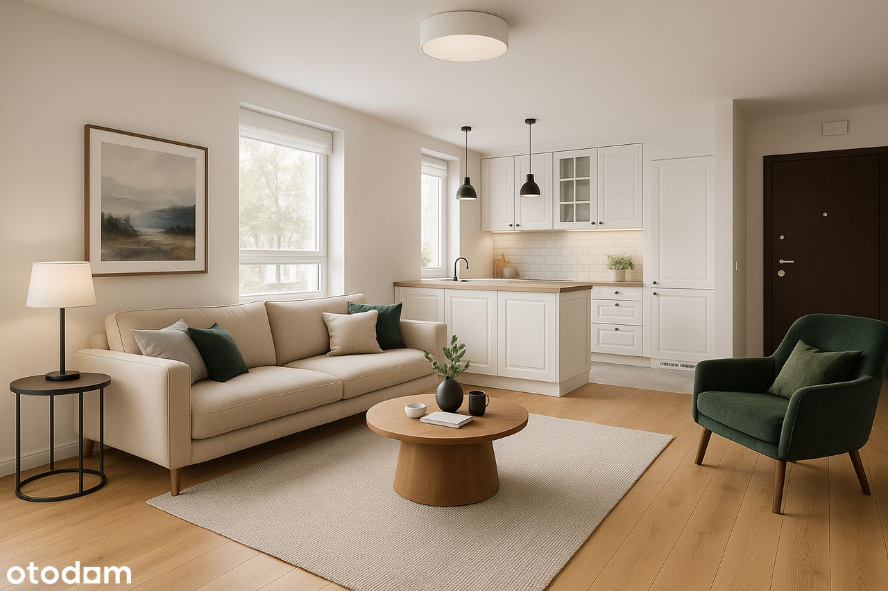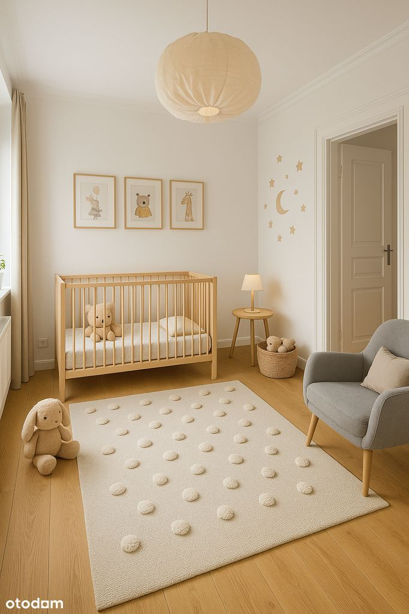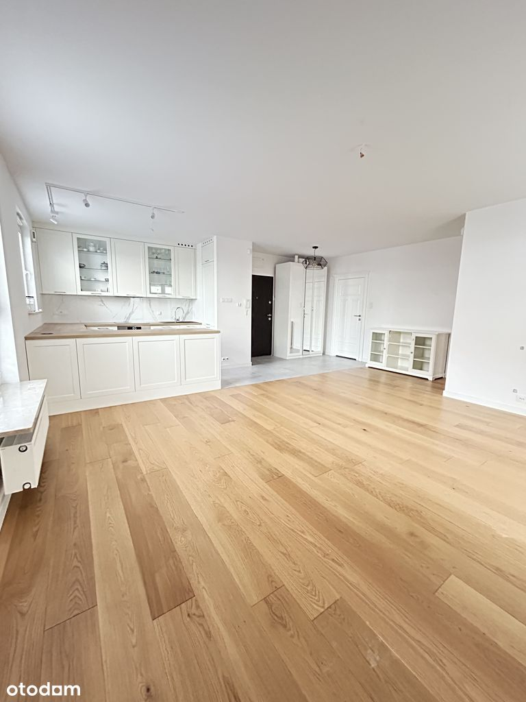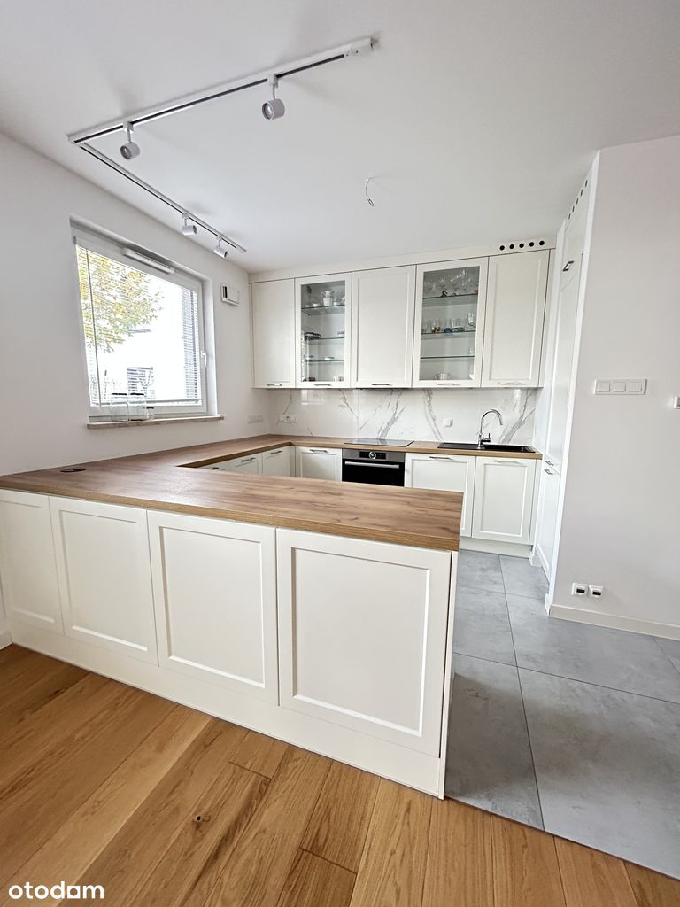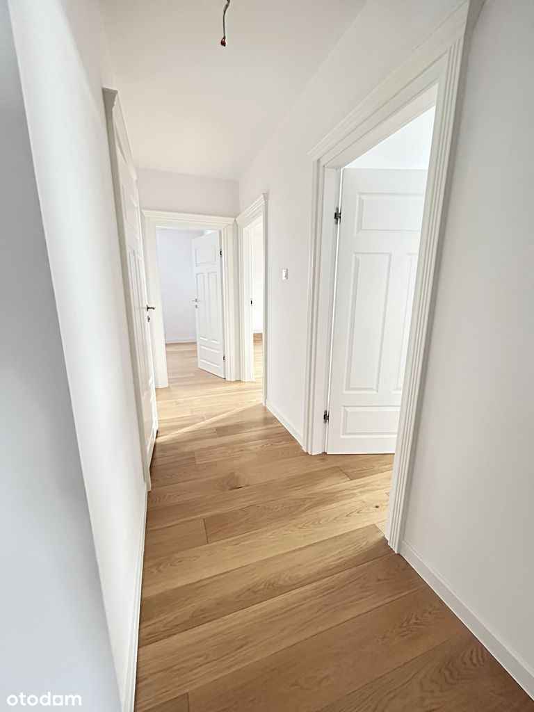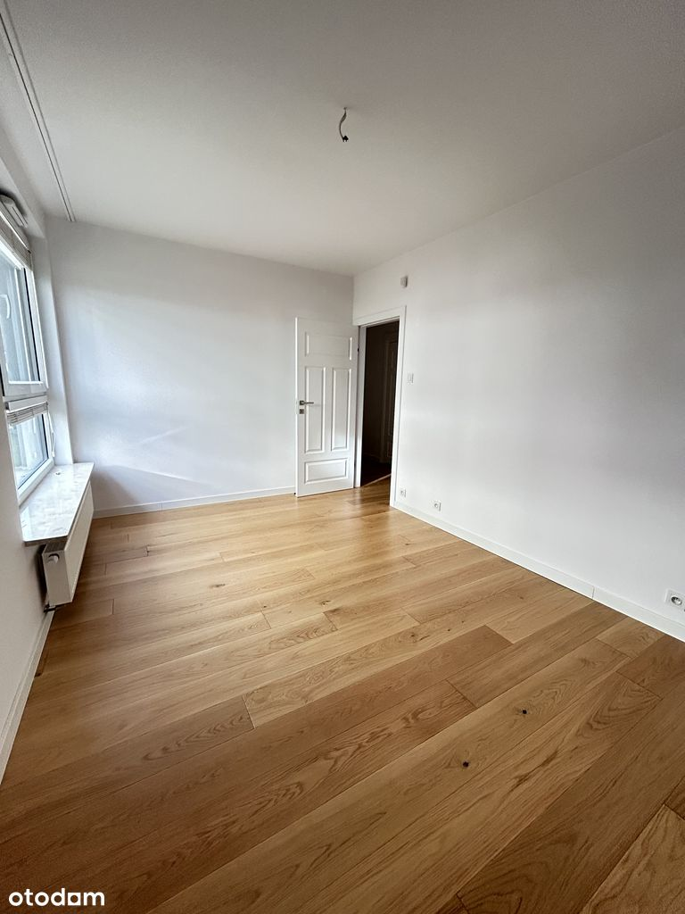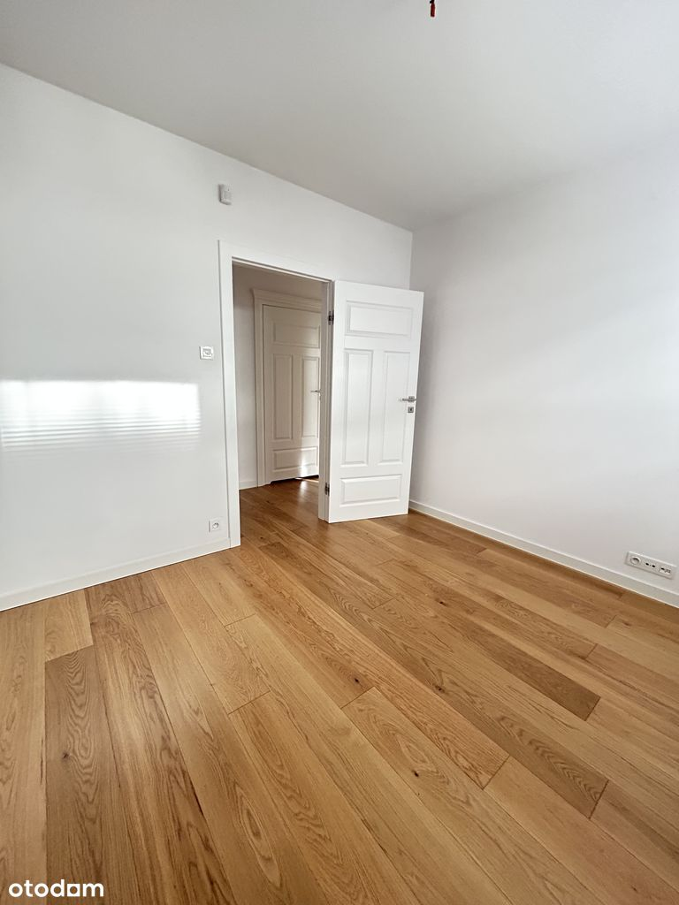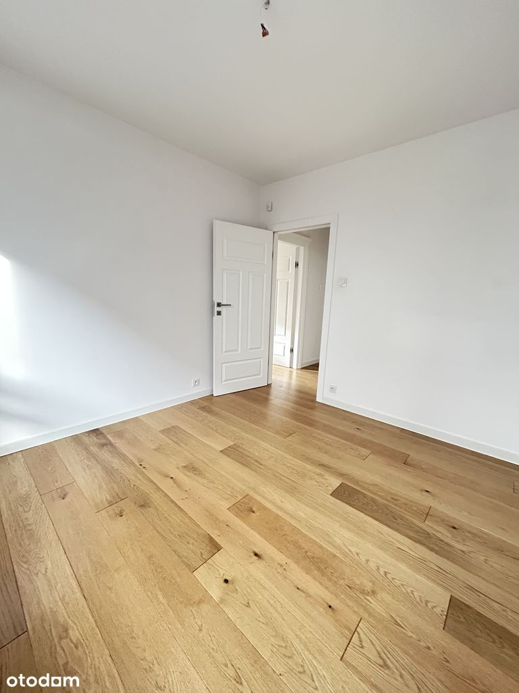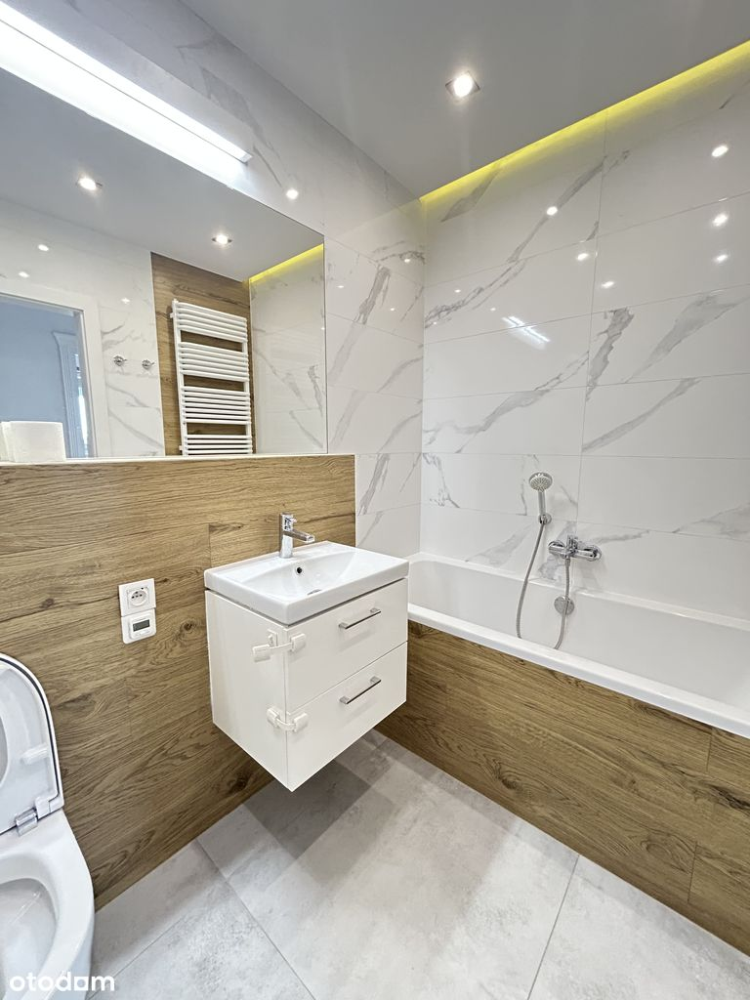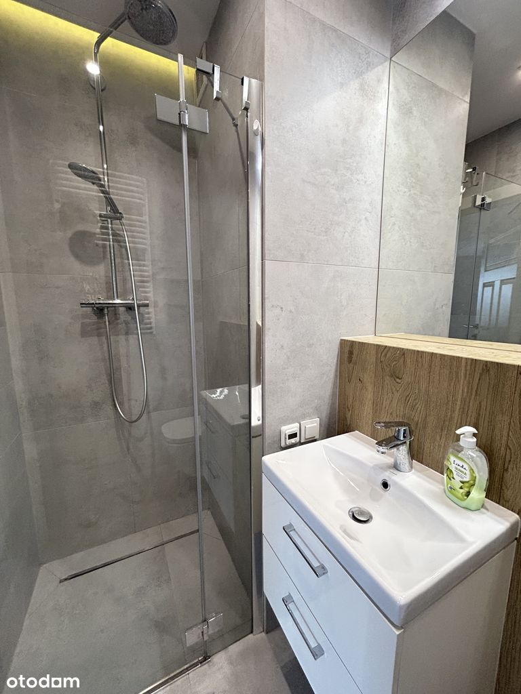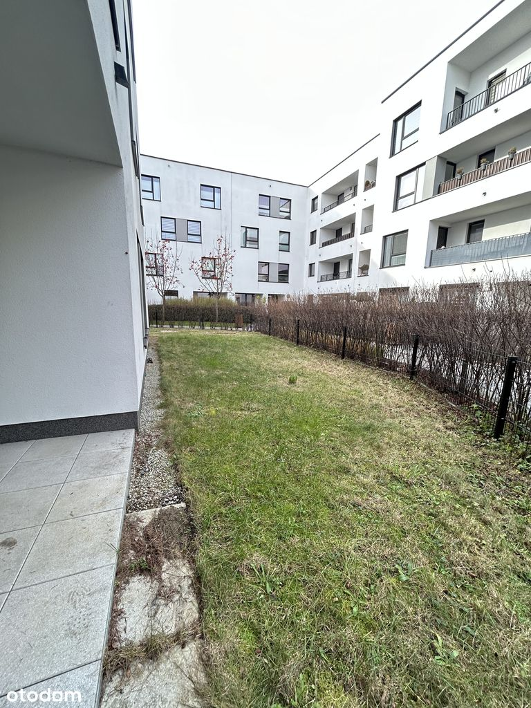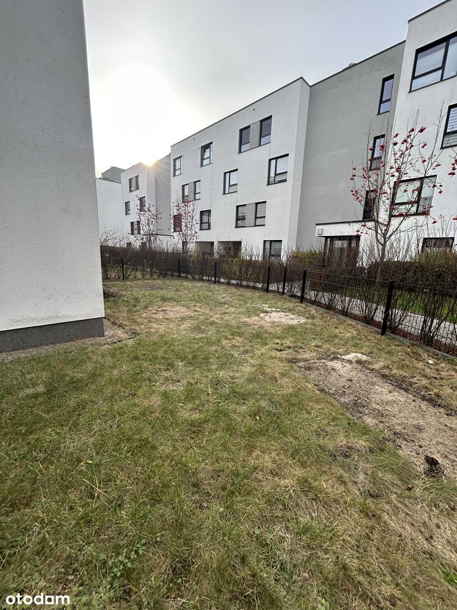